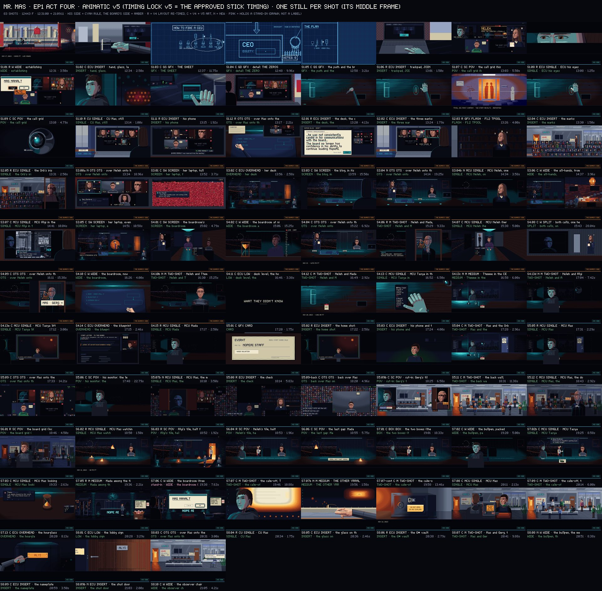
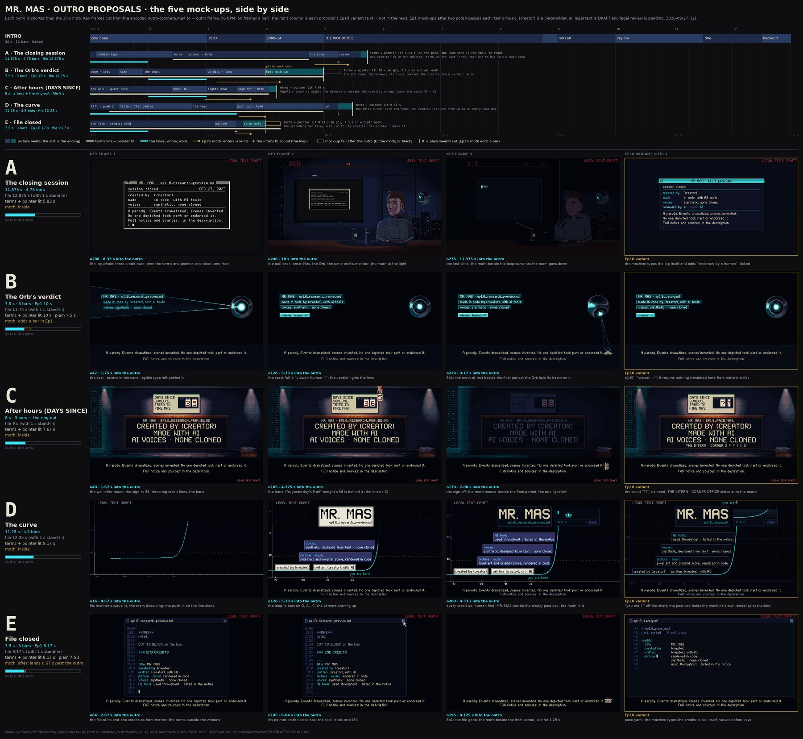
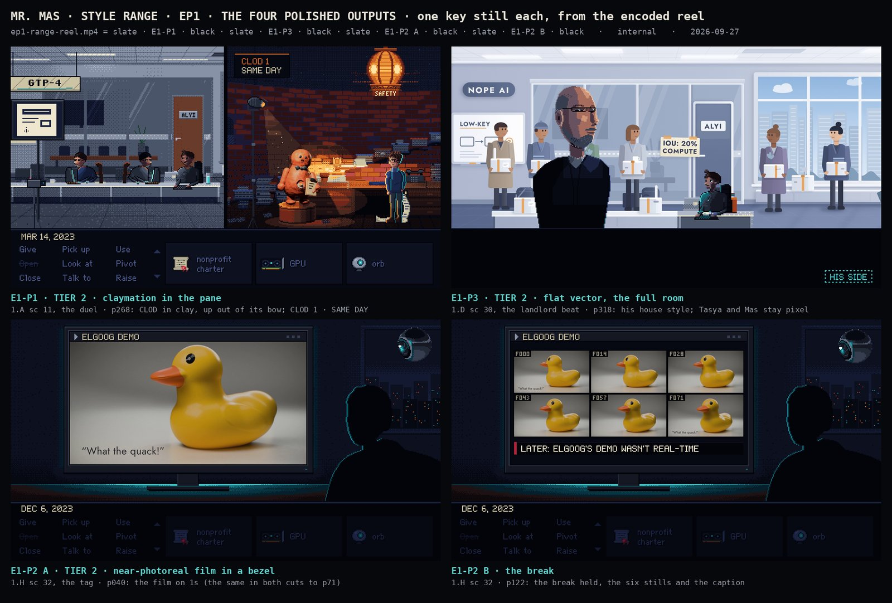
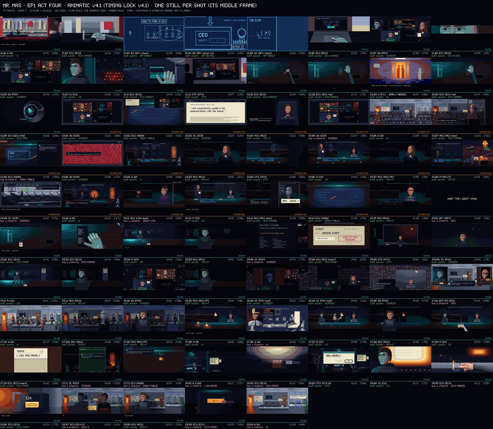
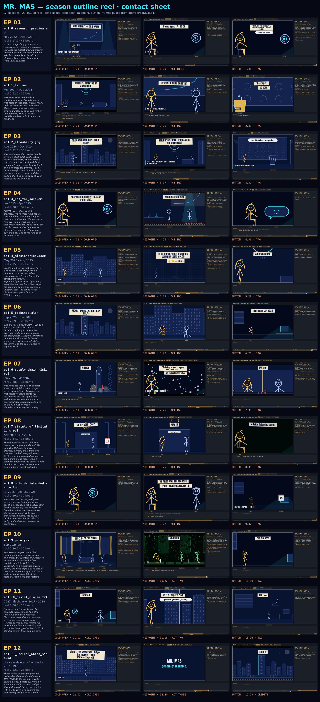
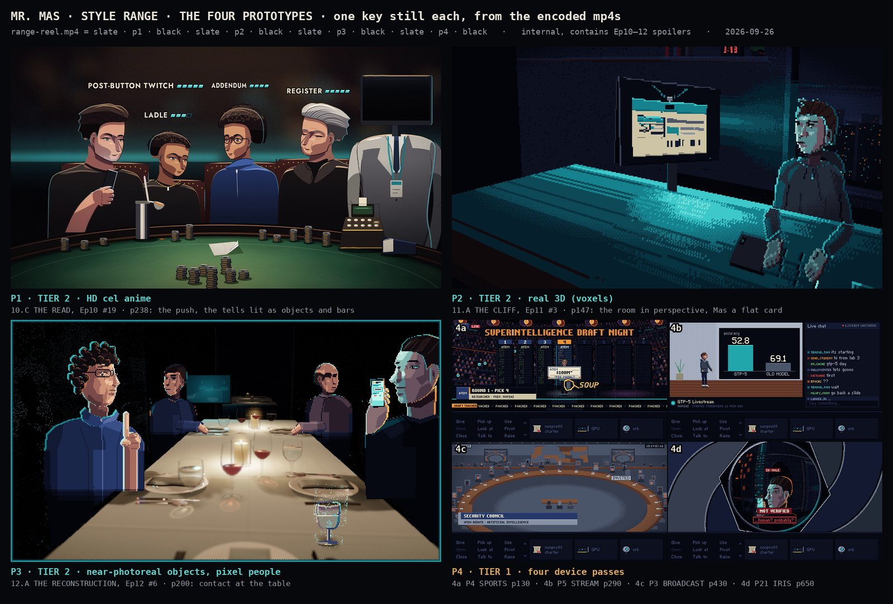
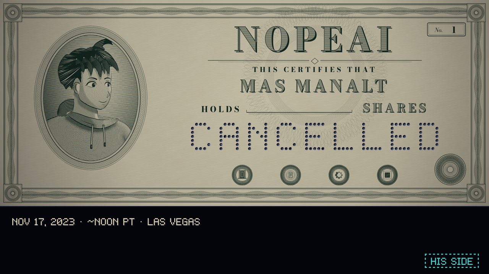
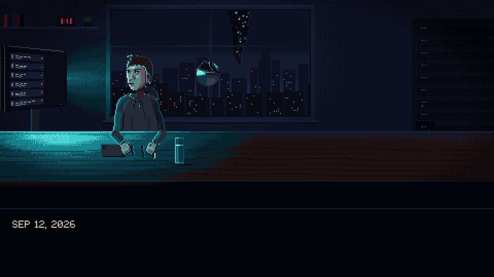
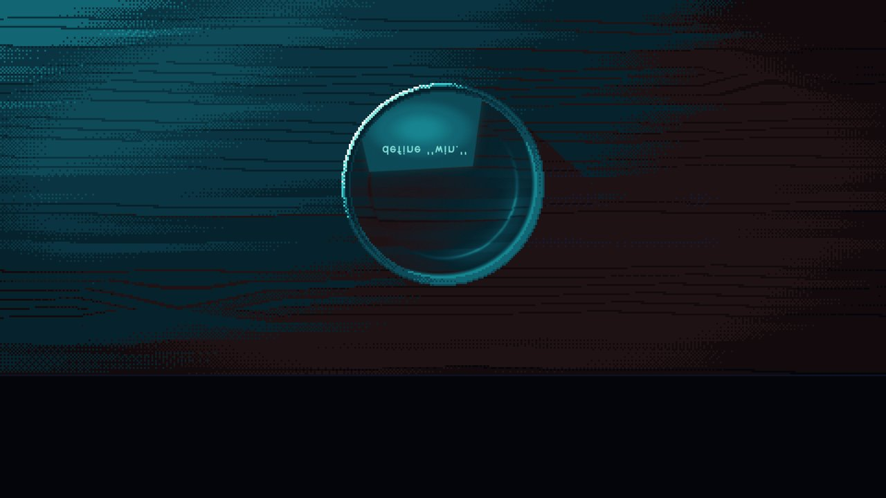

Everything that landed today, in one place. Nobody, me included, has watched or listened to these in real time: every claim below is measured or checked on stills. The first watch and listen are yours. Decisions are collected at the bottom.
out/ep01/act4/animatic/act4-animatic-v5-finalmix.mp4 (re-made after the fix round). Full notes: show/episodes/ep01/production/act4/v5-pixel-for-review.md. Picture follows the approved stick reel line for line; stock text-to-speech voices.The conversation pass in the real art: 101 lines instead of 45, with conversations that play out. The sound is finished: six continuous score cues from the soundtrack's Ep1 material, 199 sound effects and 19 room beds, one designed silence after the Cancel click, and dialogue a median 14.6 dB over the music, on the loudness target.
v5-pixel-for-review.md §9.2.35 s: the click with the glyph dissolve (current), then with the engraved CANCELLED certificate (J1).

show/episodes/ep01/production/act4/finish-v5.md| Proposal | Length | What it is | Trade-off |
|---|---|---|---|
| A · The closing session | 11.9 s | One credits log on Mas's monitor, then out to him in his dark room, ending on the intro's cursor | The only one with Mas in the last shot; the longest |
| B · The Orb's verdict | 7.5 s (Ep1 10 s) | The Orb scans the viewer: credits as its toast, then a verdict | The best character moment; the least reading time |
| C · After hours | 8 s | The lobby's DAYS SINCE sign ticks 35 → 36 above a directory of credits | The most in-world; real credits on a parody company's wall is a legal question |
| D · The curve | 11.25 s | The intro's cyan line carries every credit up the theme | The most cinematic; crowded, and small on a phone |
| E · File closed | 7.5 s (Ep1 8.2 s) | The episode's own file closes on its credits | Shortest, cheapest and cleanest legally; feels cool |
Recommendation: E, if its credits are cut to three short lines and the disclaimer holds for about 8 s. Otherwise B for warmth at the same length, or A to end on Mas. Each one also shows how it changes by Ep10, where the machine starts typing the credits itself.

show/production/OUTRO-PROPOSALS.md
out/ep01/act4/animatic/act4-animatic-v4.mp4Rebuilt from your note that v3 was jagged: eight sequences, each with one place, one time and one continuous piece of music; cuts on story rather than on a quota; room tone under everything; dialogue spaced like people talk. Then a newcomer read (someone setting aside the real events) and an insider read shaped v4.2: the firing click now lands visibly on Cancel with ALYI · CO-FOUNDER, people are labelled by what they are to Mas, and two beats the insider called air are gone.
| Measured | v3 | v4.2 |
|---|---|---|
| Shots · median length | 119 · 1.88 s | 77 · 2.75 s |
| Shots under 1.5 s | 48 | 2 |
| Music pieces · shortest | 33 fragments · 0.1 s | 5 performances · 19.4 s |
| Near-silent holes (0.3 s+) | 78 · 70.5 s | 1 · 3.6 s (the designed drop-out after Cancel) |
| Median gap between replies | 0.12 s | 0.50 s |
| Runtime | 4:09 | 4:11 |
Each is a story call, listed in the decisions below. Their retell of the throughline matched the intended one.

show/episodes/ep01/production/act4/v4-for-review.mdEvery episode now opens its plan with its storyline as a newcomer would see it, and five critics (continuity, drama, newcomer, insider, facts) read the season. World and public-sentiment beats landed at 27, DOT at 6 small beats, the China Card at 3 plays, lore at 10, all as a menu with each added second paid for inside its episode. The finale's kill switch is now set up in plain sight across Eps 7 to 11.
out/reel/ep01.mp4 … ep12.mp4; full season: out/reel/season.mp4. Plan: show/production/season-revision-plan.md
Passes treat our own pixel frame (a sports broadcast, a livestream, a news feed, a scanner lens), used often and always in code. Leaps redraw a moment in another medium (HD anime, 3D, clay, voxels, near-photoreal objects), about 16 across the season, each motivated and entering through something on screen. Hard media get a programmatic filler now and a video-model or Blender final later; caricatures of real people are never near-photoreal.

Plan: show/bible/style-range.md



Sixteen cues across twelve tones: the dark room, his too-clean "keynote" version, the blueprint, the board's procedure, the swing avalanche, the victory lap, the machine's glyph dread, RUMPT's podium and more. Rule breaks and engine bugs are fixed and every sample set is retuned to within 5 cents. Listen first for MM-10's new second chorus, whether MM-09 still sounds minor, and whether the soft harp is too bright.
audio/ost/SAMPLER.md · bible: audio/ost/OST-BIBLE.mdOUR DUTY: THE MISSION, NOT THE COMPANY)?Default: withheld.WHAT THEY DIDN'T KNOW card (the newcomer found it puzzling, the insider a spoiler). Keep, swap for the Orb's "fast-forwarding…", or a hard cut to the badge?Default: keep.HOW TO FIRE A CEO, twenty seconds before the click, inside the firing's own act. Suspense or spoiler?Default: keep, as heist-style setup.